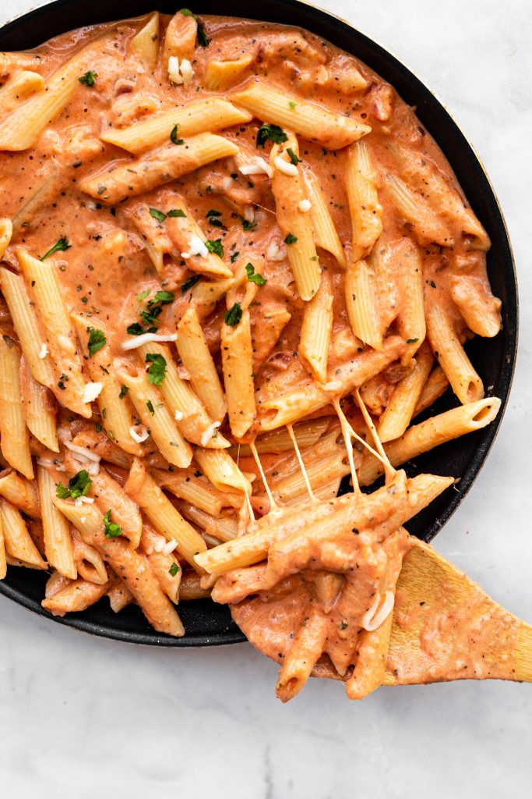

Pink Sauce Pasta

What is pink sauce?
Pasta pink sauce is one of the most popular restaurant dishes to order. It’s a blend of tomato and cream sauce, so the resulting pasta sauce is colored pink. It’s really delicious! It has tang from the tomato sauce, and creaminess from white sauce without being too rich and heavy. It makes creamy sauced pasta more approachable!
Ingredient List
- 300 g pasta of choice, I used penne
- 2 tbsp butter
- tbsp olive oil
- small red onion, minced
- garlic cloves, minced
- 1.5 cups tomato passata (or puree or sauce-not tomato paste)
- 1 tsp dried basil
- 1 chicken bouillon cube, crumbled
- pinch sugar
- sprinkle of red chili flakes
- salt and pepper to taste
- 1/2 cup heavy cream
- 1/2 cup milk
- 1/3-1/2 cup shredded mozzarella cheese
Steps
- Cook the pasta to al dente according to package instructions, then drain, reserving some of the pasta water.
- Heat a large skillet over medium heat and add the butter and olive oil. Once the butter has melted, add the onion and cook for 4-5 minutes until softened. Add the garlic and cook for another minute.
- Add the tomato passata, dried basil, crumbled chicken bouillon cube, sugar, red chili flakes and salt and pepper to taste. Simmer for a few minutes, then add the cream, milk and the shredded mozzarella.
- Add the cooked pasta, toss to combine and warm through for a few minutes. If sauce is too thick, add a splash of pasta water. Enjoy immediately!